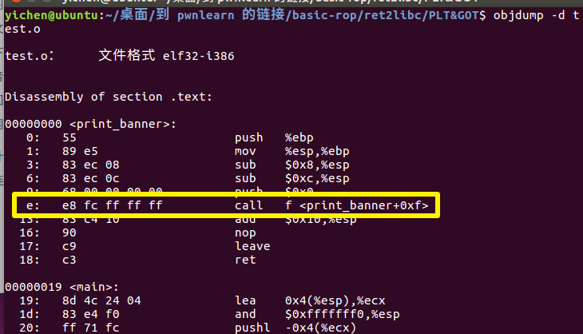
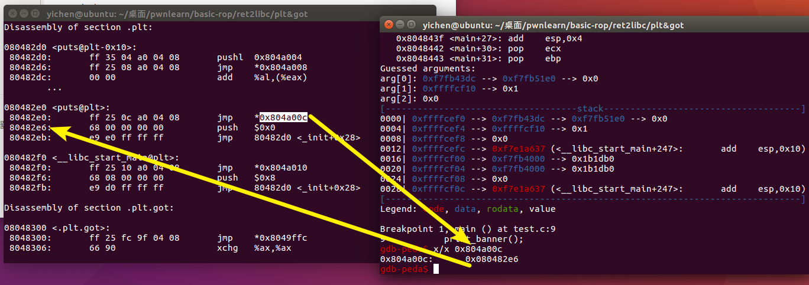
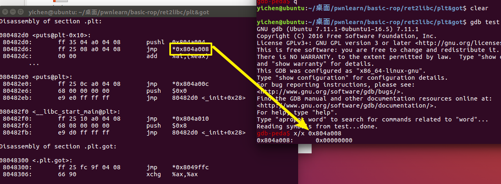
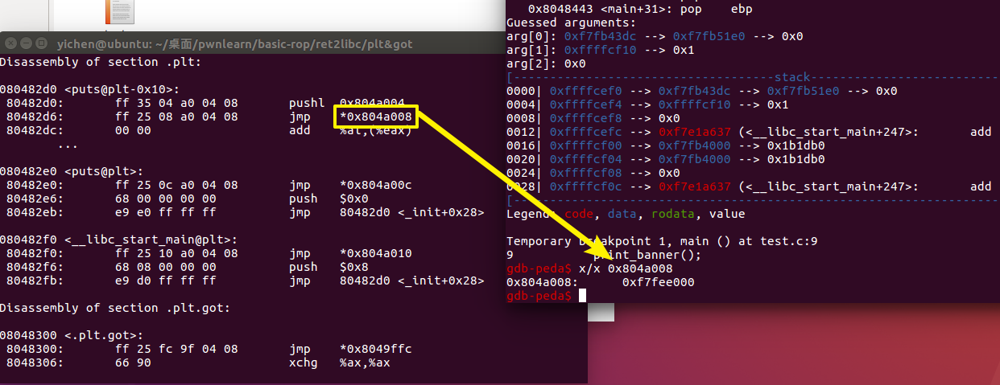
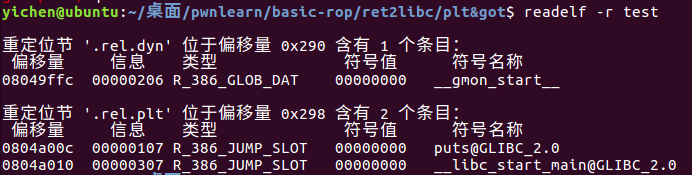

Linux动态链接
文章转自：Basic-ROP · 语雀 (yuque.com)
Linux动态链接
关于动态链接与静态链接，可以打个比方就是：如果我的文章引用了别人的一部分文字，在我发布文章的时候把别人的段落复制到我的文章里面就属于静态连接，而做一个超链接让你们自己去看就属于动态链接了
PLT&GOT
linux下的动态链接是通过PLT&GOT来实现的，这里做一个实验，通过这个实验来理解
使用如下源代码 test.c：
1 |
|
依次使用下列命令进行编译：
1 | gcc -Wall -g -o test.o -c test.c -m32 |
这样除了原有的 test.c 还有个 test.o 以及可执行文件 test
通过 objdump -d test.o 可以查看反汇编

printf() 和函数是在 glibc 动态库里面的，只有当程序运行起来的时候才能确定地址，所以此时的 printf() 函数先用 fc ff ff ff 也就是有符号数的 -4 代替
运行时进行重定位是无法修改代码段的，只能将 printf 重定位到数据段，但是已经编译好的程序，调用 printf 的时候怎么才能找到这个地址呐？
链接器会额外生成一小段代码，通过这段代码来获取 printf() 的地址，像下面这样，进行链接的时候只需要对printf_stub() 进行重定位操作就可以
1 | .text |
总体来说，动态链接每个函数需要两个东西：
1、用来存放外部函数地址的数据段
2、用来获取数据段记录的外部函数地址的代码
对应有两个表，一个用来存放外部的函数地址的数据表称为全局偏移表（GOT, Global Offset Table），那个存放额外代码的表称为程序链接表（PLT，Procedure Link Table）

可执行文件里面保存的是 PLT 表的地址，对应 PLT 地址指向的是 GOT 的地址，GOT 表指向的就是 glibc 中的地址
那我们可以发现，在这里面想要通过 plt 表获取函数的地址，首先要保证 got 表已经获取了正确的地址，但是在一开始就进行所有函数的重定位是比较麻烦的，为此，linux 引入了延迟绑定机制
延迟绑定
只有动态库函数在被调用时，才会地址解析和重定位工作，为此可以使用类似这样的代码来实现：
1 | //一开始没有重定位的时候将 printf@got 填成 lookup_printf 的地址 |
说明一下这段代码工作流程，一开始，printf@got 是 lookup_printf 函数的地址，这个函数用来寻找 printf() 的地址，然后写入 printf@got，lookup_printf 执行完成后会返回到 address_good，这样再 jmp 的话就可以直接跳到printf 来执行了
也就是说这样的机制的话如果不知道 printf 的地址，就去找一下，知道的话就直接去 jmp 执行 printf 了
接下来，我们就来看一下这个“找”的工作是怎么实现的：
通过 objdump -d test > test.asm 可以看到其中 plt 表项有三条指令
1 | Disassembly of section .plt: |
ps.这里 plt 表的第一项使用 objdump 的时候给没有符号名的一项自动改成了离他最近的一项，为了避免引起误会，改成了 common，而且随着不断深入，会发现，确实可以叫 common
其中除第一个表项以外，plt 表的第一条都是跳转到对应的 got 表项，而 got 表项的内容我们可以通过 gdb 来看一下，如果函数还没有执行的时候，这里的地址是对应 plt 表项的下一条命令，即 push 0x0
（说一下怎么查看，先 gdb test 然后 b main，再 run， 再 x/x jmp的那个地址 就可以）

还记得之前我们说的，在还没有执行过函数之前 printf@got 的内容是 lookup_printf 函数的地址吗，这就是要去找 printf 函数的地址了
现在要做的是：
1 | push $0x0 //将数据压到栈上，作为将要执行的函数的参数 |
接下来继续
1 | 080482d0 <common@plt>: |
我们同样可以使用 gdb 来看一下这里面到底是什么，可以看到，在没有执行之前是全 0

当执行后他有了值

这个值对应的函数是 _dl_runtime_resolve
那现在做一个小总结：
在想要调用的函数没有被调用过，想要调用他的时候，是按照这个过程来调用的
xxx@plt -> xxx@got -> xxx@plt -> 公共@plt -> _dl_runtime_resolve
到这里我们还需要知道
- _dl_runtime_resolve 是怎么知道要查找 printf 函数的
- _dl_runtime_resolve 找到 printf 函数地址之后，它怎么知道回填到哪个 GOT 表项
第一个问题，在 xxx@plt 中，我们在 jmp 之前 push 了一个参数，每个 xxx@plt 的 push 的操作数都不一样，那个参数就相当于函数的 id，告诉了 _dl_runtime_resolve 要去找哪一个函数的地址
在 elf 文件中 .rel.plt 保存了重定位表的信息，使用 readelf -r test 命令可以查看 test 可执行文件中的重定位信息

这里有些问题，对应着大佬博客说 plt 中 push 的操作数，就是对应函数在.rel.plt 段的偏移量，但是没对比出来
第二个问题，看 .rel.plt 的位置就对应着 xxx@plt 里 jmp 的地址
在 i386 架构下，除了每个函数占用一个 GOT 表项外，GOT 表项还保留了３个公共表项，也即 got 的前３项，分别保存：
got [0]: 本 ELF 动态段 (.dynamic 段）的装载地址
got [1]：本 ELF 的 link_map 数据结构描述符地址
got [2]：_dl_runtime_resolve 函数的地址
动态链接器在加载完 ELF 之后，都会将这３地址写到 GOT 表的前３项
跟着大佬的流程图来走一遍：
第一次调用

之后再次调用
实战验证
有空再更，还有别的得弄。